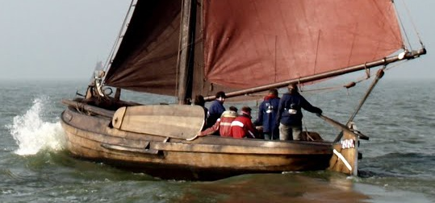

Over de vereniging
De Bolk is een van de kleinere verenigingen in Delft waar alle leden elkaar kennen.
Bij ons heerst dan ook een huiselijke en ongedwongen sfeer, waardoor je lekker jezelf kunt zijn.
Het unieke aan onze vereniging is dat de leden heel divers zijn, maar wel open staan voor anderen.
Op deze manier kun je in een week mee doen aan een biercantus en een debatavond, gevolgd door een weekend zeilen.
Onze sociëteit ligt vlakbij het station en het centrum. Bolkers kun je meestal vinden aan de bar voor een (speciaal)biertje en een tosti of in de achterzaal voor een spelletje.
De Bolk is erg divers dus er zijn veel verschillende commissies. Samen houden zij onze mooie vereniging draaiende. In het tweede kwartaal van het collegejaar kun je zelf ook al een beetje commissie-ervaring opdoen in een van de eerstejaarscommissies. Verzorg bijvoorbeeld een maaltijd, feest of zeilweekend voor je mede-eerstejaars! Hierna kun je besluiten of je graag deel uit wil maken van een van onze commissies. Kijk voor een overzicht van alle commissies even op de verenigingssite: Activiteiten en commissies.
We zijn ook actief in het varen met en onderhouden van onze botter Trui. Een botter is een zeilboot oorspronkelijk bedoeld om mee te vissen, Trui is gebouwd in 1875 en erkend als een varend monument. Tijdens de KennisMakingsTijd (KMT) zal je ook met Trui varen. Kijk voor meer informatie op haar website, www.bu130.nl
Onze leden zijn niet alleen maar bezig met al deze gave dingen, we moeten natuurlijk ook studeren. Lid zijn bij de Bolk kun je prima combineren met je studie. Wij stellen geen verplichtingen die jou kunnen belemmeren om te studeren. Verder heb je als eerstejaars contact met alle leden van de Bolk, dus ook met de ouderejaars bij wie je terecht kunt voor hulp.